المواصفة الملزمة
SCR-C01.md
لا توجد لقطة أصلية؛ لقطة Android هي مرجع الاعتماد.
لا توجد لقطة أصلية؛ لقطة Android هي مرجع الاعتماد.
51 لقطة Android بحجم 400×800: إعادة اعتماد C01 بعد إضافة تبويبي الرسائل والطلبات، وكل حالات C18 وC19 وC25 وC26 وC27 وC28.
المنجز: API الحقيقي، تحديث المحادثة كل 5 ثوانٍ، الصور من منتقي النظام، عقود الصفحات، تفاصيل الإيصال، وأسباب المشكلة والبلاغ المدارة من الداشبورد. كل القوائم تعرض تسميات الخادم وترسل أكواده فقط.
| الشاشة | Android | iOS | حالات Android | حالات Swift Core |
|---|---|---|---|---|
| SCR-C01 | موجود | موجود | 5 | 5 |
| SCR-C18 | موجود | موجود | 6 | 6 |
| SCR-C19 | موجود | موجود | 8 | 8 |
| SCR-C25 | موجود | موجود | 7 | 7 |
| SCR-C26 | موجود | موجود | 8 | 8 |
| SCR-C27 | موجود | موجود | 10 | 10 |
| SCR-C28 | موجود | موجود | 7 | 7 |
C27 يغطي T-22 لفتح النزاع. C18 وC19 وC25 وC26 وC28 لا تنفذ انتقال حالة طلب جديدًا؛ وتظل كل الإجراءات مشروطة بـ available_actions.
مكونات مستخدمة بلا مكوّن أو رمز جديد: ProviderHeader، ChatBubble، ChatInput، OrderCard، SortChips، SummaryCard، RadioCard، TextAreaField وAppBottomSheet. أضيفت مفاتيح نصوص الرسائل والمحادثة وطلباتي والإيصال والمشكلة والبلاغ؛ أما الأسباب وتسمياتها فمن GET /config وليست نصوصًا ثابتة في التطبيق.
الأسئلة المفتوحة: لا يوجد.
iOS غير المتحقق منه آليًا: Swift Core اجتاز البناء والاختبارات على Linux، وكل iosapp اجتاز swift-format وSwiftLint. SwiftUI لا يمكن بناؤه دون أطر Apple؛ بناؤه والرسم واللقطات مؤجلة لدفعة تحقق iOS.
SCR-C01-loading
SCR-C01-error
SCR-C01-empty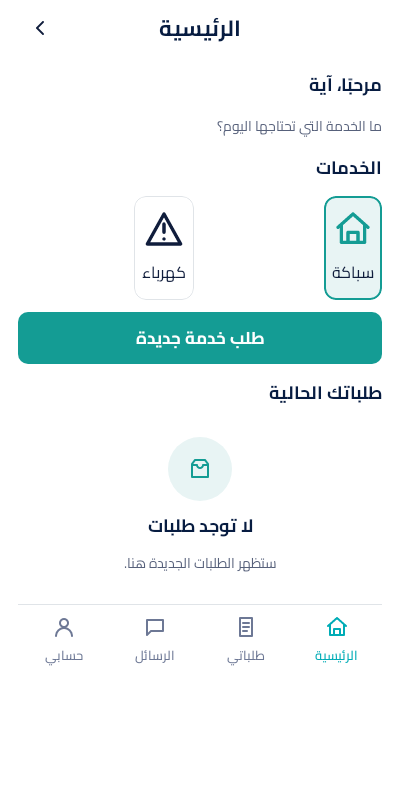
SCR-C01-marketplace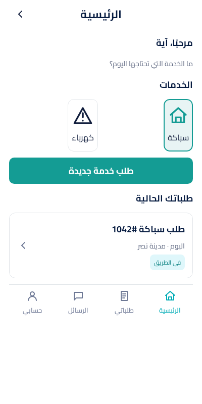
SCR-C01-staff
SCR-C18-loading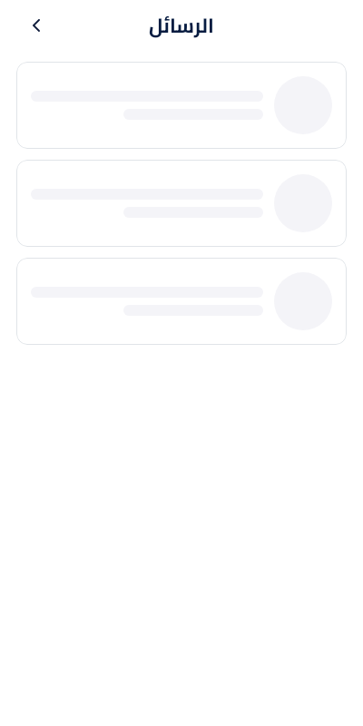
SCR-C18-error
SCR-C18-emptySCR-C18-no_messagesSCR-C18-singleSCR-C18-multipleSCR-C19-loading
SCR-C19-errorSCR-C19-empty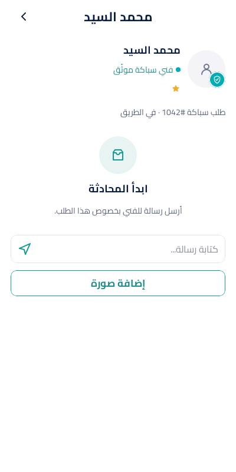
SCR-C19-messages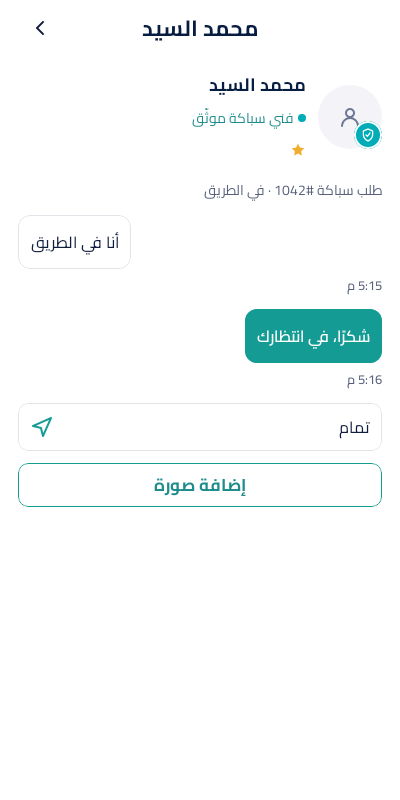
SCR-C19-masked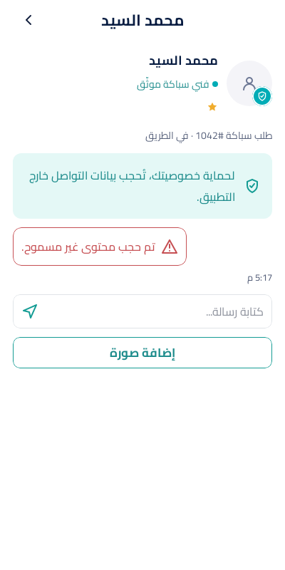
SCR-C19-images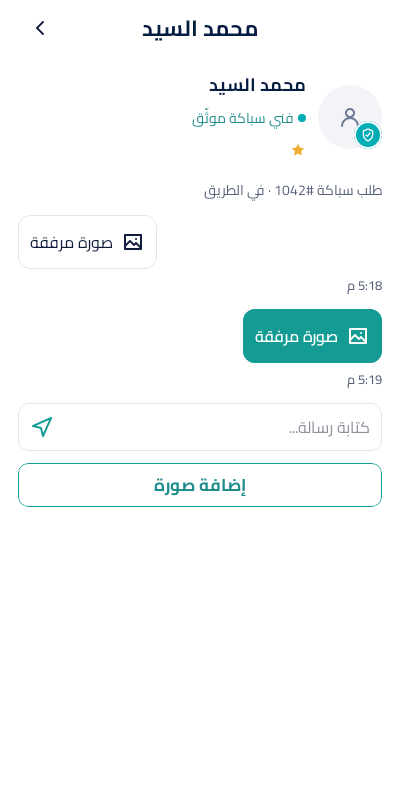
SCR-C19-sending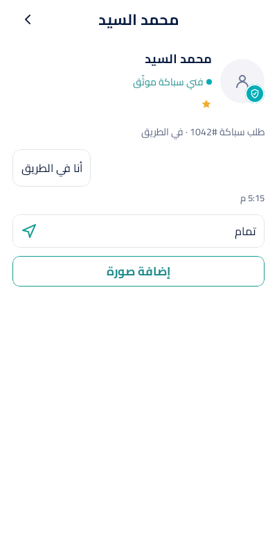
SCR-C19-read_onlySCR-C25-loading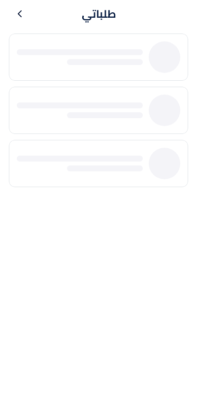
SCR-C25-errorSCR-C25-current_emptySCR-C25-past_emptySCR-C25-currentSCR-C25-pastSCR-C25-next_page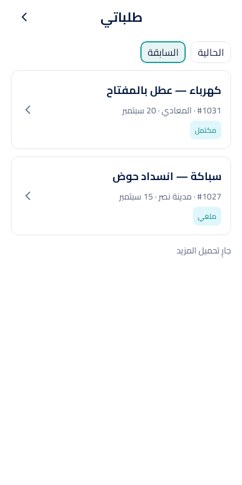
SCR-C26-loading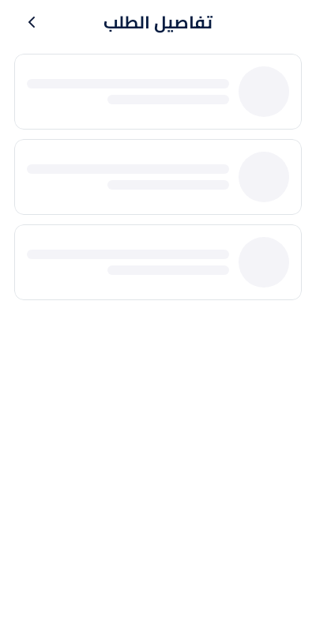
SCR-C26-errorSCR-C26-cash
SCR-C26-electronicSCR-C26-waivedSCR-C26-cancelledSCR-C26-expiredSCR-C27-loading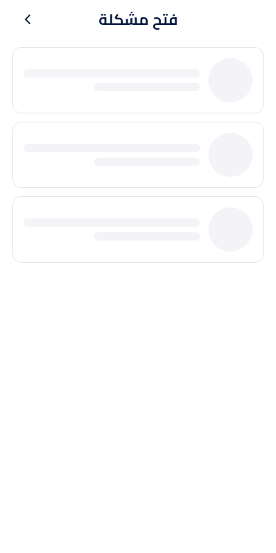
SCR-C27-errorSCR-C27-empty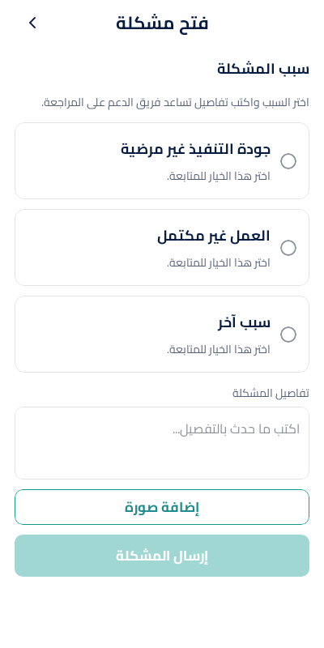
SCR-C27-reason_selected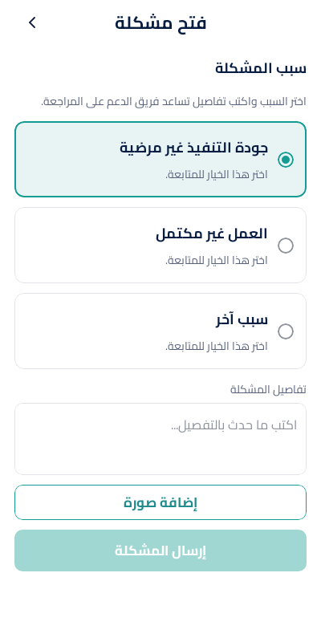
SCR-C27-valid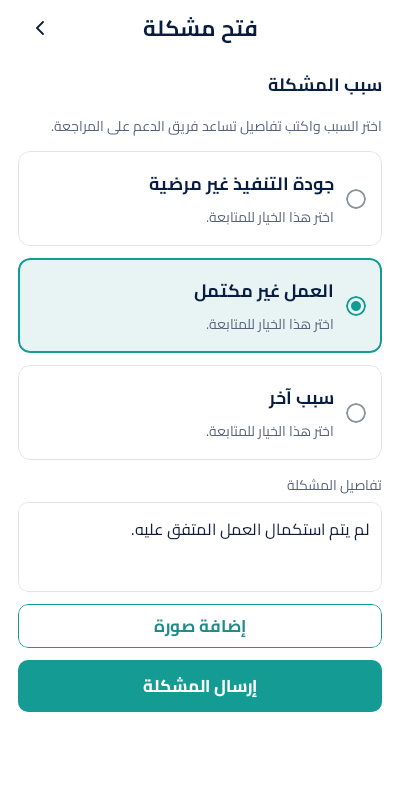
SCR-C27-with_photo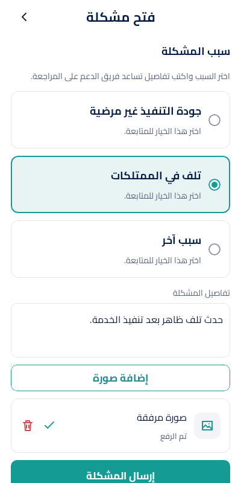
SCR-C27-submitting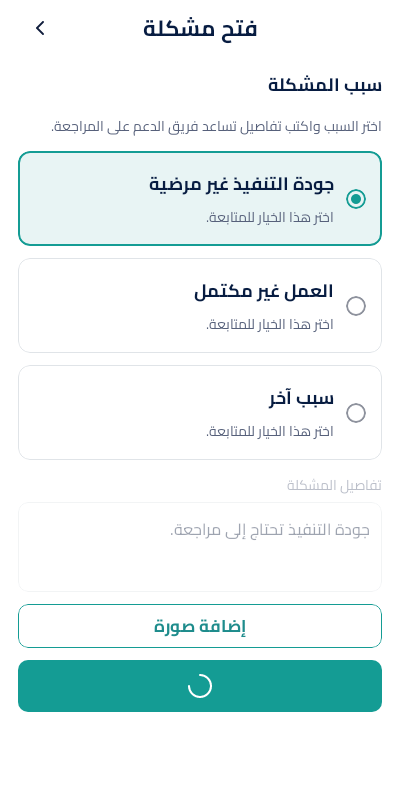
SCR-C27-successSCR-C27-openSCR-C27-resolvedSCR-C28-loading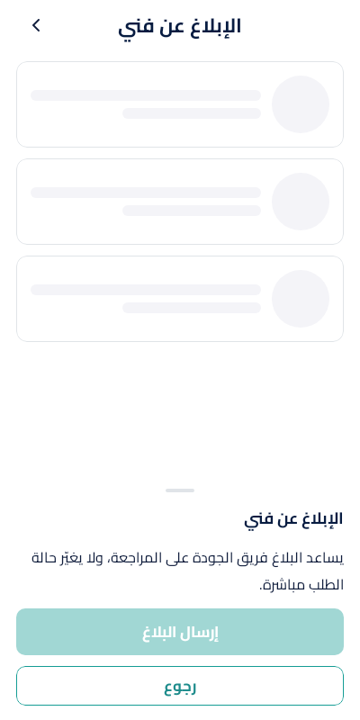
SCR-C28-error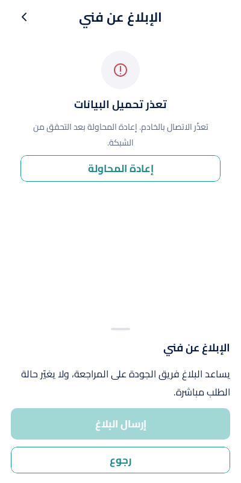
SCR-C28-empty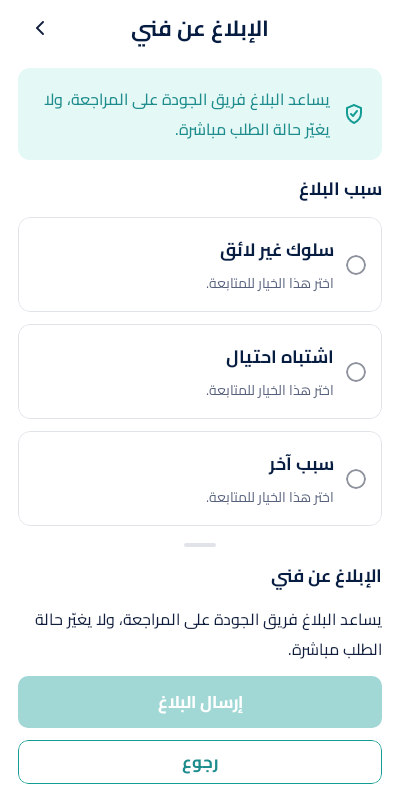
SCR-C28-selected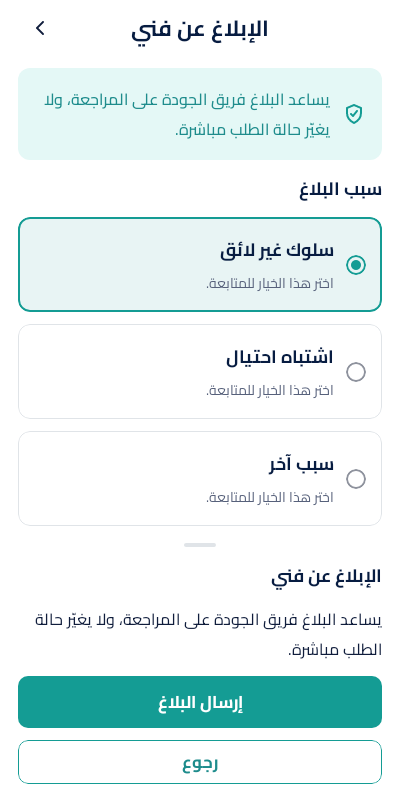
SCR-C28-with_details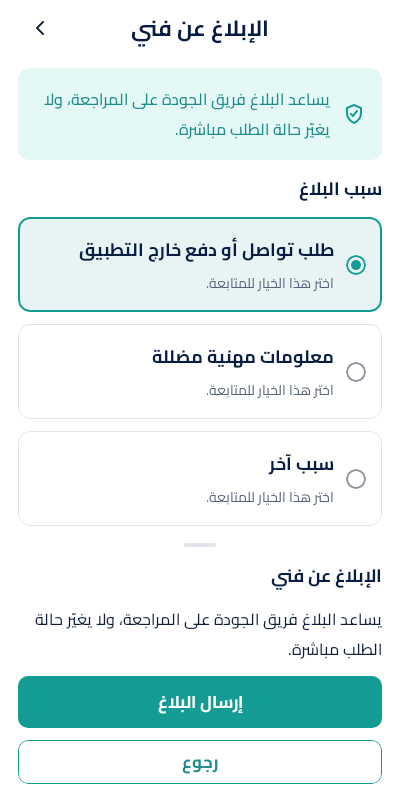
SCR-C28-submitting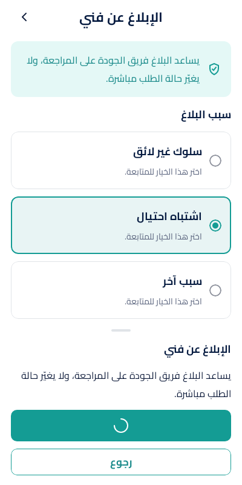
SCR-C28-success